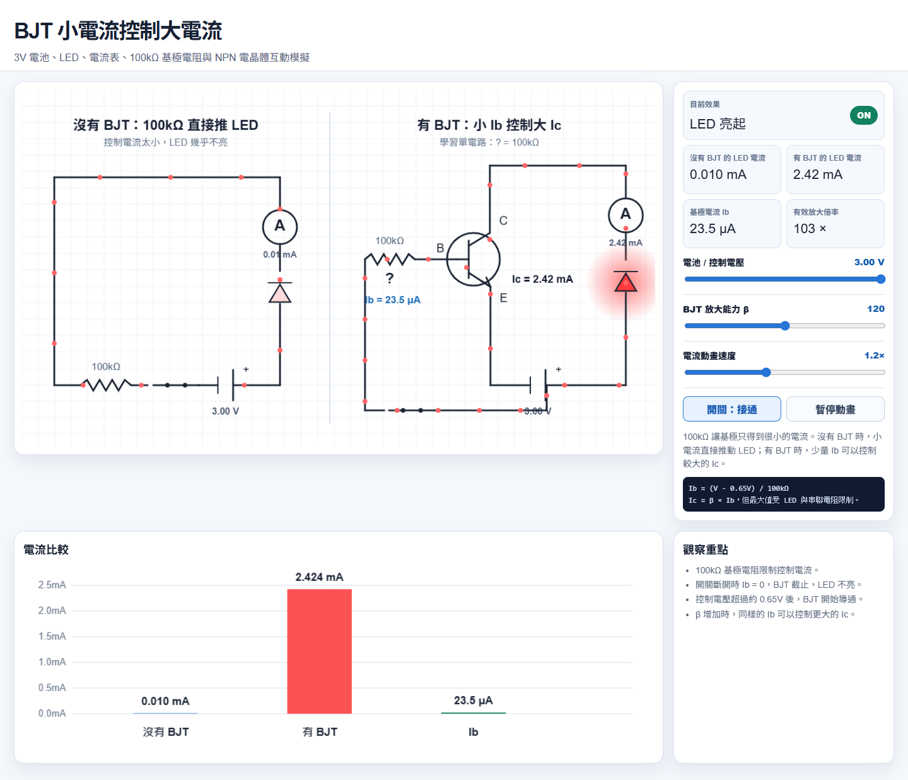
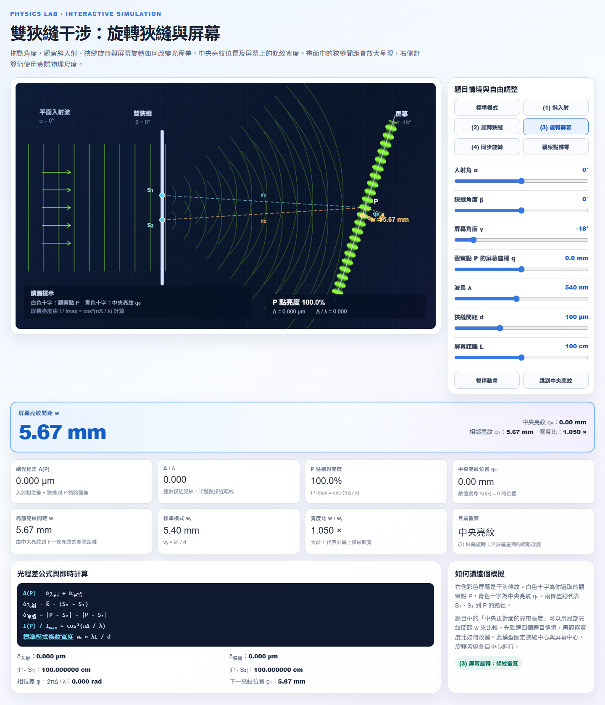
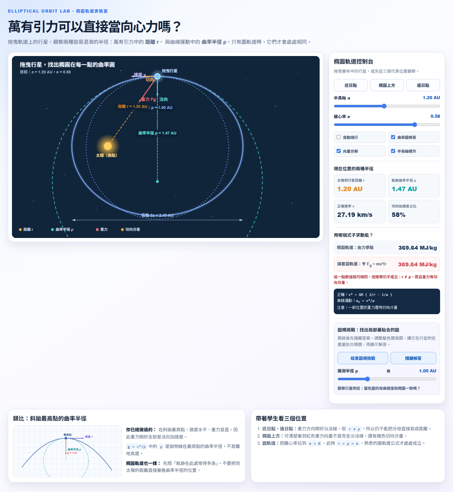
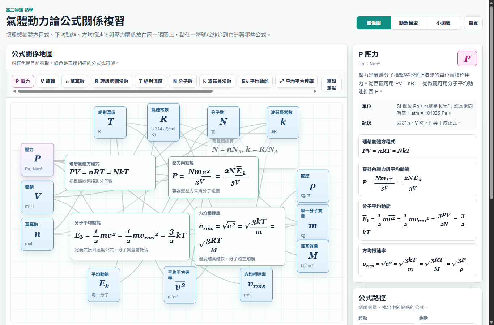

把抽象公式，變成可以拉動的現象。
九個適合課堂投影與學生自主操作的互動模擬與複習工具。調整參數、比較情境， 再回頭理解公式中的每一個物理量。
點選下方卡片即可開始。所有內容都在瀏覽器中執行，不需安裝程式，也不會上傳資料。
選擇一個模擬
9 個主題 · 電學、波動、軌道力學、熱學
BJT：小電流控制大電流
比較「直接推動 LED」與「透過 BJT 控制 LED」的差異，觀察基極電流如何控制更大的集極電流。
適合觀察：基極電阻、放大倍率 β、LED 電流與開關效果。
開始模擬 →
雙狹縫干涉：旋轉狹縫與屏幕
拖動入射角、狹縫與屏幕角度，觀察光程差、中央亮紋位置與局部亮紋間距如何改變。
適合觀察：光程差、相位差、屏幕寬度與標準模式比較。
開始模擬 →水波干涉：波程差與相位差
從兩個點波源的重疊波紋，調整波長、波源距離與初始相位，讀出程差如何決定干涉。
適合觀察：程差 Δr、相位差、同相／反相，以及觀察點 P 的相長與相消。
開始模擬 →
橢圓軌道力學能：兩種半徑
拖曳軌道上的行星，同時比較太陽距離 r 與曲率半徑 ρ，理解萬有引力何時不能直接套用圓軌道公式。
適合觀察：曲率圓、切向加速度、力學能與斜拋最高點類比。
開始模擬 →
氣體動力論：公式關係複習
把理想氣體方程式、分子平均動能、方均根速率與壓力關係放在同一張圖上，點符號就能追公式來源。
適合觀察：P、V、n、T、N、k、平均動能與 vrms 之間的連結。
開始複習 →雙繩交界的繩波
調整兩段繩的線密度，觀察脈波或連續波在交界的反射、透射與能量守恆。
適合觀察：波速差異、反相或同相反射、透射振幅與 R + τ = 100%。
開始模擬 →三角脈衝波疊加與質點振動速度
觀察兩個相向傳播的三角脈衝如何疊加，並追蹤固定位置質點的位移與振動速度。
適合觀察：疊加原理、建設性與破壞性干涉，以及質點瞬時速度。
開始模擬 →分子自由度：把運動拆開看
逐一開關平移、轉動與振動模式，從可獨立指定的運動理解自由度與能量均分定理。
適合觀察：單原子 3、雙原子剛性 5，以及一個振動模態如何讓熱容量計數增加 2。
開始模擬 →圓形駐波：看見節線與腹部
切換圓形振膜的模態，觀察固定不動的節徑、節圓，以及顏色交替振動的腹部。
適合觀察：圓形邊界、節點、腹部與不同振動模態。
開始模擬 →課堂使用建議
先讓學生預測，再動手改變一個參數，最後用公式整理觀察結果。
教師可利用快捷按鈕切換代表情境，集中比較關鍵變因。
學生使用一般瀏覽器即可操作，適合作為課堂練習或課後複習。